수질환경산업기사 (2015-08-16 기출문제)
1과목: 수질오염개론
1. 미생물의 종류를 분류할 때 에너지원에 따라 분류된 것은?
- Autotroph, Heterotroph
- Phototroph, Chemotroph
- Aerotroph, Anaerotroph
- Themertroph, Psychrotroph
(정답률: 71%)

2. 0.⑤N의 약산인 초산이 16% 해리되어 있다면 이 수용액의 pH는?
- 2.1
- 2.3
- 2.6
- 2.9
(정답률: 62%)
3. 탈산소계수(K1)가 0.2/day인 하천의 어떤 지점에서 BODu가 20mg/L이었다. 그 지점에서 5일 흐른 후의 잔존 BOD는? (단, 상용대수 적용)
- 2mg/L
- 4mg/L
- 6mg/L
- 8mg/L
(정답률: 73%)
4. KMnO4의 gram 당량은 얼마인가? (단, KMnO4 분자량 = 158)
- 26.3
- 31.6
- 39.5
- 52.6
(정답률: 71%)
5. A시료의 수질분석 결과가 다음과 같을 때 이 시료의 총경도는?
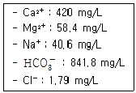
- 525 mg/L as CaCO3
- 646 mg/L as CaCO3
- 1,⑤0 mg/L as CaCO3
- 1,293 mg/L as CaCO3
(정답률: 62%)
6. 물의 특성으로 옳지 않는 것은?
- 물의 표면장력은 온도가 상승할수록 감소한다.
- 물은 4℃에서 밀도가 가장 크다.
- 물의 여러 가지 특성은 물의 수소결합 때문에 나타난다.
- 융해열과 기화열이 작아 생명체의 열적 안정을 유지할 수 있다.
(정답률: 86%)
7. 산성비를 정의할 때 기준이 되는 수소이온농도(pH)는?
- 4.3
- 4.5
- 5.6
- 6.3
(정답률: 84%)
8. 다음의 질산화 과정에 주로 관계되는 질산화 미생물은?
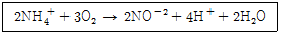
- Nitrosomonas
- Nitrobacter
- Thiobacillus
- Leptothrix
(정답률: 73%)
9. 수질오염물질과 그로 인한 공해병과의 관계를 잘못 짝지은 것은?
- Hg : 미나마타병
- Cr : 이따이이따이병
- F : 반상치
- PCB : 카네미유증
(정답률: 74%)
10. 수질오염에 관계되는 미생물과 그 경험적 분자식이 맞는 것은?
- Bacteria : C5H10O2N
- Algae : C7H12O2N
- Protozoa : C7H14O3N
- Fungi : C10H15O6N
(정답률: 71%)
11. 다음이 설명하는 법칙은?
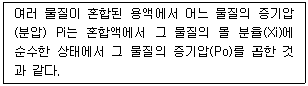
- Henry's law
- Dalton's law
- Graham's law
- Raoult's law
(정답률: 53%)
12. 해수의 화학적 특성 중에서 영양염류의 농도는 매우 중요하다. 다음 중 영양염류가 찬 바다에 많고 따뜻한 바다에 적은 이유로 틀린 것은?
- 찬 바다의 표층수는 원래 영양염류가 풍부한 극지방의 심층수로부터 기원하기 때문에
- 따뜻한 바다의 표층수는 적도부근의 표층수로부터 기원하기 때문에
- 찬 바다에는 겨울철 성층현상의 심화로 수계가 안정되어 영양염류의 손실이 적기 때문에
- 따뜻한 바다에서 표층수의 영양염류는 공급 없이 식물성 플랑크톤에 의한 소비만 주로 일어나기 때문에
(정답률: 51%)
13. 농업용수 수질의 척도인 SAR을 구할 때 포함되지 않는 항목은?
- Ca
- Mg
- Na
- Mn
(정답률: 86%)
14. 임의의 시간후의 용존산소부족량(용존산소곡선식)을 구하기 위해 필요한 기본인자와 가장 거리가 먼 것은?
- 재포기계수
- BODU
- 수심
- 탈산소계수
(정답률: 79%)
15. 우리나라 수자원에 대하여 이용량을 용도별로 나눌 때 그 수요가 가장 높은 것은?
- 생활용수
- 공업용수
- 농업용수
- 하천유지용수
(정답률: 83%)
16. 유기성 오수가 하천에 유입된 후 유하하면서 자정작용이 진행되어 가는 여러 상태를 그래프로 표시하였다. (1)~(6) 그래프 각각이 나타내는 것을 순서대로 나열한 것은?
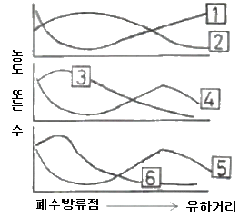
- BOD, DO, NO3-N, NH3-N, 조류, 박테리아
- BOD, DO, NH3-N, NO3-N, 박테리아, 조류
- DO, BOD, NH3-N, NO3-N, 조류, 박테리아
- DO, BOD, NO3-N, NH3-N, 박테리아, 조류
(정답률: 70%)
17. 콜로이드에 관한 설명으로 틀린 것은?
- 콜로이드는 입자크기가 크기 때문에 보통의 반투막을 통과하지 못한다.
- 콜로이드 입자들이 전기장에 놓이게 되면 입자들은 그 전하의 반대쪽 극으로 이동하며 이러한 현상을 전기 영동이라 한다.
- 일부 콜로이드 입자들의 크기는 가시광선 평균 파장 보다 크기 때문에 빛의 투과를 간섭한다.
- 콜로이드의 안정도는 척력과 중력의 차이에 의해 결정된다.
(정답률: 59%)
18. 수심이 깊은 호소에서 발생하는 성층현상에 관한 설명으로 틀린 것은?
- 봄이 되면 얼음이 녹으면서 표수층의 수온이 올라가 4℃가 되면 최대밀도를 가지게 되어 아래로 이동하게 된다.
- 수온약층은 표수층에 비하여 수심에 따른 수온차이가 작다.
- 여름과 겨울에는 성층현상이 가을과 봄에는 전도현상이 나타난다.
- 호소의 성층현상은 기후특성, 호수저수용량에 따른 유입유출량의 크기, 호수의 크기 등 다양한 환경인자에 의해 영향을 받는다.
(정답률: 70%)
19. 다음 중 산화 환원반응이 아닌 것은?(오류 신고가 접수된 문제입니다. 반드시 정답과 해설을 확인하시기 바랍니다.)
- Cu + 2H2SO4 → CuSO4 + 2H2O + SO2
- 2H2S + SO2 → 2H2O + 3S
- I2 + 2Na2S2O3 → Na2S4O6 + 2Nal
- Na2SO4 + 2HCl → 2NaCl + H2O + SO2
(정답률: 53%)
20. 500mL 물에 125mg의 염이 녹아 있을 때 이 수용액의 농도를 %로 나타낸 값은?
- 0.125%
- 0.250%
- 0.0125%
- 0.0250%
(정답률: 57%)
2과목: 수질오염방지기술
21. 부상조의 최적 A/S비는 0.08, 처리할 폐수의 부유물질 농도는 250mg/L, 운전압력 5.1atm 일 때 반송률(%)은? (단, 20℃ 기준, 용존 공기분율 = 0.8, 공기용해도 = 18.7mL/L)
- 약 17
- 약 27
- 약 37
- 약 47
(정답률: 51%)
22. BOD 200mg/L인 하수를 1차 및 2차 처리하여 최종 유출수의 BOD농도를 20mg/L로 하고자 한다. 1차 처리에서 BOD제거율이 40%일 때, 2차 처리에서의 BOD 제거율은?
- 81%
- 83%
- 87%
- 89%
(정답률: 61%)
23. 유입수량 4,000m3/day, BOD 200mg/L, SS 150mg/L 이고 침전지의 깊이를 4m, 체류시간은 3시간으로 할 때 침전지(장방형)의 표면부하율은?
- 12 m3/m2・day
- 22 m3/m2・day
- 32 m3/m2・day
- 42 m3/m2・day
(정답률: 50%)
24. 물의 혼합정도를 나타내는 속도경사 G를 구하는 공식은? (단, μ : 물의 점성계수, V : 반응조 체적, P : 동력)
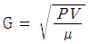
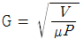
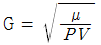
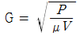
(정답률: 78%)
25. 고도수처리에 이용되는 분리방법 중 투석의 구동력으로 옳은 것은?
- 정수압차(0.1~1Bar)
- 정수압차(20~100Bar)
- 전위차
- 농도차
(정답률: 60%)
26. 생물학적 인(P) 제거공법인 A/O 공법에 관한 설명으로 옳지 않은 것은?
- 유입수 중에 총인농도가 5mg/L 정도이면, 처리수의 총인동도를 1.0mg/L 이하로 처리가능하다.
- 인 제거 기능 외에 사상성미생물에 의한 벌킹 억제효과가 있다고 알려져 있다.
- 혐기반응조의 운전지표로 산화환원전위를 사용할 수 있다.
- 표준활성슬러지법의 반응조 전반 50% 이상을 혐기반응조로 하는 것이 표준이다.
(정답률: 47%)
27. 슬러지의 함수율 90%, 슬러지의 고형 물량 중 유기물 함량이 70% 이다. 투입량은 100kL이며, 소화로 유기물의 5/7가 제거된다. 소화된 후의 슬러지 양은? (단, 소화슬러지의 함수율은 85%, %는 부피 기준이며, 고형물의 비중은 1.0으로 가정한다.)
- 18.3m3
- 24.2m3
- 33.3m3
- 41.4m3
(정답률: 53%)
28. 활성 슬러지공법으로 운전되고 있는 어떤 하수처리장으로부터 매일 2,000kg(건조고형물기준)의 슬러지가 배출되고 있다. 이 슬러지를 중력 농축시켜 함수율을 97%로 한 뒤 호기성 소화방식으로 처리하고자 한다. 농축된 슬러지의 비중이 1.03이라 할 때 소화조의 수리학적 체류시간을 15day로 하면 필요한 소화조의 용적은? (단, 기타 조건은 고려하지 않음)
- 약 670m3
- 약 770m3
- 약 870m3
- 약 970m3
(정답률: 47%)
29. 혼합액 부유물의 농도가 2,500mg/L이고, 이를 1L 실린더에 취하여 30분 후 침전된 슬러지 부피를 측정한 결과 200mL였다면 이 실험에서 구해진 SVI값은?
- 67
- 80
- 124
- 152
(정답률: 56%)
30. 하수처리에서 자외선 소독의 장・단점으로 틀린 것은?
- 잔류독성이 없는 장점이 있다.
- 대장균살균을 위한 낮은 농도에서 virus, spores, cysts 등을 비활성화 시키는데 효과적인 장점이 있다.
- 잔류효과가 없는 단점이 있다.
- 성공적 소독 여부를 즉시 측정할 수 없는 단점이 있다.
(정답률: 59%)
31. 활성슬러지법으로 운전되는 하수처리장에서 SVI가 100일 때 포기조 내의 MLSS 농도를 2,500mg/L로 유지하기 위한 슬러지 반송률은? (단, 유입수의 SS 농도는 무시한다.)
- 25.4%
- 27.5%
- 33.3%
- 37.3%
(정답률: 60%)
32. 역삼투법으로 하루에 200m3의 3차 처리 유출수를 탈염하기 위해 소요되는 막의 면적은?
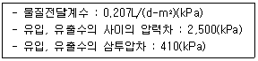
- 약 324m3
- 약 462m3
- 약 541m3
- 약 694m3
(정답률: 43%)
33. 부피가 500m3인 포기조에 2,000m3/day으로 폐수가 유입될 때 포기시간(hr)은? (단, 반송슬러지는 고려하지 않음)
- 6.0 hr
- 8.0 hr
- 10.0 hr
- 12.0 hr
(정답률: 66%)
34. 어느 하수 처리장의 포기조 용적이 1,000m3, MLSS가 2,500mg/L, 그리고 SRT(고형물 체류시간)가 2.5일 이라면 1일 생산되는 슬러지의 건조중량은? (단, 기타조건은 고려하지 않음)
- 1.0ton
- 1.6ton
- 2.4ton
- 3.2ton
(정답률: 59%)
35. 생물학적 인 및 질소제거 공정 중 질소제거를 주목적으로 개발한 공법으로 가장 적절한 것은?
- 4단계 Bardenpho 공법
- A2/O 공법
- A/O 공법
- Phostrip 공법
(정답률: 54%)
36. 회전원판법의 장・단점으로 틀린 것은?
- 유지관리비가 저렴한 장점이 있다.
- 슬러지 반송이 필요 없는 장점이 있다.
- 충격부하 및 부하변동에 약한 단점이 있다.
- 처리수의 투명도가 낮은 단점이 있다.
(정답률: 68%)
37. 어느 폐수 처리 시설에서 직경 1×10-2(cm), 비중 2.0인 입자를 중력 침강시켜 제거하고 있다. 폐수 비중이 1.0, 폐수의 점성계수가 1.31×10-2(g/cm・sec) 이라면 입자의 침강속도(m/hr)는? (단, 입자의 침강속도는 Stokes식에 따름)
- 14.96m/hr
- 22.44m/hr
- 25.56m/hr
- 31.32m/hr
(정답률: 49%)
38. 어느 특정한 산화지에 대해 1일 BOD부하를 10kg/day-m2 으로 설계하였다. 유량이 4,000m3/day이고 BOD 농도가 300mg/L일 때 필요한 면적(m2)은? (단, 비중은 1.0으로 가정함)
- 약 90
- 약 110
- 약 120
- 약 150
(정답률: 67%)
39. 활성탄을 이용한 고도처리 방법에서 2차 처리 유출수의 유기물 농도가 12mg/L일 때 활성탄 흡착법을 이용하여 3차 처리유출수 유기물 농도를 1mg/L로 되게 하기 위해 1L당 필요한 활성탄량은? (단, Freundlich 등온식 적용, k=0.5, n=1이다.)
- 22mg
- 29mg
- 32mg
- 39mg
(정답률: 46%)
40. 1,000m3/day의 종말 침전지 유출수에 50.0kg/day의 염소를 주입시킨 결과 잔류 염소 농도가 1.5mg/L였다면 이 폐수의 염소 요구량은?
- 18.3mg/L
- 24.7mg/L
- 32.5mg/L
- 48.5mg/L
(정답률: 57%)
3과목: 수질오염공정시험방법
41. 총질소를 자외선/가시선 분광법-산화법으로 분석할 때에 관한 설명으로 옳지 않은 것은?
- 비교적 분해되기 쉬운 유기물을 함유하고 있거나 자외부에서 흡광도를 나타내는 브롬이온이나 크롬을 함유하지 않는 시료에 적용한다.
- 시료 중 모든 질소화합물을 과황산나트륨을 사용하여 100℃ 부근에서 유기물과 함께 분해하여 질산이온으로 산화시킨다.
- 지표수, 지하수, 폐수 등에 적용할 수 있으며, 정량한계는 0.1mg/L이다.
- 산성상태로 하여 흡광도를 220nm에서 측정한다.
(정답률: 40%)
42. 다음 중 물벼룩을 이용한 급성독성 시험에 관한 설명으로 틀린 것은?
- 시험생물은 물벼룩인 Daphnia Magna Straus를 사용한다.
- 표준독성물질 시험은 다이크로산칼륨을 사용한다.
- 시료의 희석비는 원수 100%를 기준으로, 50%, 25%, 12.5%, 6.25%로 하여 시험한다.
- 시험기간 동안 조명은 명 : 암 = 1 : 1시간을 유지하도록 한다.
(정답률: 62%)
43. 개수로 측정 구간의 유수의 평균 단면적이 0.8m2이고, 표면 최대 유속이 2m/sec일 때 유량은? (단, 수로의 구성, 재질, 수로 단면의 형상, 구배 등이 일정치 않은 개수로의 경우)
- 43 m3/min
- 52 m3/min
- 64 m3/min
- 72 m3/min
(정답률: 49%)
44. 시료 최대보존기간이 가장 짧은 측정항목은?
- 셀레늄
- 염화비닐
- 비소
- 6가크롬
(정답률: 54%)
45. 자외선/가시선 분광법에 의한 시안 분석 시 측정파장으로 옳은 것은?
- 460nm
- 510nm
- 540nm
- 620nm
(정답률: 47%)
46. 다음 중 직각 3각 웨어로 유량을 산정하는 식으로 옳은 것은? (단, Q : 유량(m3/분), K : 유량계수, h : 웨어의 수두(m), b : 절단의 폭(m))
- Q = K・h3/2
- Q = K・h5/2
- Q = K・b・h3/2
- Q = K・b・h5/2
(정답률: 66%)
47. 수질오염공정시험기준의 관련 용어 정의가 잘못된 것은?
- '감압 또는 진공'이라 함은 따로 규정이 없는 한 15mmH2O 이하를 뜻한다.
- '냄새가 없다'라고 기재한 것은 냄새가 없거나, 또는 거의 없는 것을 표시하는 것이다.
- '약'이라 함은 기재된 양에 대하여 ±10% 이상의 차가 있어서는 안된다.
- 시험조작 중 '즉시'란 30초 이내에 표시된 조작을 하는 것을 뜻한다.
(정답률: 77%)
48. 이온크로마토그래프의 일반적인 구성으로 옳은 것은?
- 용리액조-시료 주입부-펌프-이온화부-검출기
- 용리액조-시료 주입부-가열판-펌프-검출기
- 용리액조-시료 주입부-펌프-분리컬럼-검출기
- 용리액조-시료 주입부-분광부-펌프-검출기
(정답률: 63%)
49. 총대장균군 시험 방법인 평판집락법 배지에 사용되는 시약은?
- 뉴트럴 레드
- 브루신 블루
- 메틸 오렌지
- 클로라민 엘로
(정답률: 53%)
50. 취급 또는 저장하는 동안에 이물질이 들어가거나 또는 내용물이 손실되지 아니하도록 보호하는 용기는?
- 차광용기
- 밀봉용기
- 밀폐용기
- 기밀용기
(정답률: 70%)
51. 냄새 측정시 냄새역치(TON)를 구하는 산식으로 옳은 것은? (단, A : 시료부피(mL), B : 무취 정제수 부피(mL))
- 냄새역치 = (A+B)/A
- 냄새역치 = A/(A+B)
- 냄새역치 = (A+B)/B
- 냄새역치 = B/(A+B)
(정답률: 74%)
52. 다음 중 백색원판(투명도 판)을 사용한 투명도 측정에 관한 설명으로 옳지 않은 것은?
- 투명도판의 색도차는 투명도에 크게 영향을 주므로 표면이 더러울 때에는 깨끗하게 닦아주어야 한다.
- 강우시에는 정확한 투명도를 얻을 수 없으므로 투명도를 측정하지 않는 것이 좋다.
- 흐름이 있어 줄이 기울어질 경우에는 2kg 정도의 추를 달아서 줄을 세워야 한다.
- 백색원판을 보이지 않는 깊이로 넣은 다음 천천히 끌어 올리면서 보이기 시작한 깊이를 반복해 측정한다.
(정답률: 74%)
53. 최대 유량이 1m3/min 미만인 경우, 용기에 의한 유량 측정에 관한 설명으로 틀린 것은?
- 유량(m3/min) = 60 × V/t이다. 여기서 t: 유수가 용량 V를 채우는데 걸린 시간(sec), V: 측정용기의 용량(m3)
- 유수를 채우는데 소요하는 시간을 스톱워치로 잰다.
- 용기에 물을 받아 넣는 시간을 20초 이상이 되도록 용량을 결정한다.
- 용기는 용량 50~100L인 것을 사용한다.
(정답률: 60%)
54. 분석항목별 시료의 보존 방법으로 옳지 않은 것은?
- 암모니아성 질소 : 황산을 가하여 pH 2 이하로 만들어 4℃에서 보관한다.
- 화학적 산소요구량 : 황산을 가하여 pH 2 이하로 만들어 4℃에서 보관한다.
- 유기인 : 염산을 가하여 pH 4 이하로 만들어 4℃에서 보관한다.
- 6가 크롬 : 4℃에서 보관한다.
(정답률: 54%)
55. 다음 항목 중 폴리에틸렌 용기로 보존할 수 있는 것으로 짝지은 것은?
- 색도, 페놀류, 유기인
- 질산성 질소, 총인, 냄새
- 부유물질, 불소, 셀레늄
- 노말헥산추출물질, 납, 시안
(정답률: 62%)
56. 노말헥산 추출물질 분석실험의 정량한계는?
- 0.1 mg/L
- 0.2 mg/L
- 0.3 mg/L
- 0.5 mg/L
(정답률: 47%)
57. 분원성 대장균군의 막여과 시험방법의 측정에 관한 내용으로 틀린 것은?
- 배양기 또는 항온수조의 배양온도를 (44.5±0.2)℃로 유지할 수 있는 것을 사용한다.
- 배지에 배양시킬 때 분원성 대장균군은 여러 가지 색조를 띠는 붉은색의 집락을 형성한다.
- 결과보고 시 “분원성대장균군수/100mL”로 표기한다.
- 대조군 시험에서 음성대조군은 멸균 희석수를 사용한다.
(정답률: 54%)
58. 알칼리성 과망간산칼륨에 의한 화학적 산소요구량을 수질오염공정시험기준에 따라 측정하였다. 바탕시험 적정에 소비된 0.025N-티오황산나트륨 용액은 5.6mL였고, 시료의 적정에 소비된 0.025N-티오황산나트륨 용액은 3.3mL였다. COD가 46mg/L였다면 분석에 사용된 시료량은?(단, 0.025N-티오황산나트륨 용액의 농도계수는 1.0이다.)
- 5mL
- 10mL
- 35mL
- 50mL
(정답률: 40%)
59. 0.025N KMnO4 수용액 3,000mL를 조제하려면 KMnO4 몇 g이 필요한가? (단, KMnO4의 분자량은 158 이다.)
- 1.79g
- 2.37g
- 3.16g
- 3.95g
(정답률: 58%)
60. 냄새 측정 시 시료에 잔류염소가 존재하는 경우 조치 내용으로 옳은 것은?
- 티오황산나트륨 용액을 첨가하여 잔류염소를 제거
- 아세트산암모늄 용액을 첨가하여 잔류염소를 제거
- 과망간산칼륨 용액을 첨가하여 잔류염소를 제거
- 황산은 분말을 첨가하여 잔류염소를 제거
(정답률: 66%)
4과목: 수질환경관계법규
61. 배출부과금 부과시 고려하여야 할 사항과 가장 거리가 먼 것은?
- 배출허용기준 초과 여부
- 배출되는 수질오염물질의 종류
- 수질오염물질의 배출기간
- 수질오염방지시설 설치여부
(정답률: 57%)
62. 폐수처리업 등록기준 중 폐수재이용업의 기술능력 기준으로 맞는 것은?
- 수질환경산업기사, 화공산업기사 중 1명 이상
- 수질환경산업기사, 대기환경산업기사 중 1명 이상
- 수질환경산업기사, 화학분석산업기사 중 1명 이상
- 수질환경산업기사, 위험물산업기사 중 1명 이상
(정답률: 80%)
63. 수면관리자 및 특별자치시장・특별자치도지사・시장・군수・구청장과 호소안에서 수거된 쓰레기의 운반・처리에 소요되는 비용 분담에 관한 협약이 체결될 수 있도록 조정할 수 있는 권한이 있는 자는?
- 시・도지사
- 환경부장관
- 행정자치부장관
- 유역환경청장
(정답률: 58%)
64. 1일 폐수배출량이 500m3 인 사업장의 규모 기준으로 옳은 것은? (단, 기타 조건은 고려하지 않음)
- 제2종 사업장
- 제3종 사업장
- 제4종 사업장
- 제5종 사업장
(정답률: 79%)
65. 배출시설에서 배출하는 폐수를 최종방류구로 방류하기 전에 재이용하는 사업자의 폐수 재이용률이 70%인 경우, 적용되는 기본부과금의 감면율은?
- 100분의 40
- 100분의 50
- 100분의 60
- 100분의 80
(정답률: 34%)
66. 환경정책기본법상 적용되는 용어의 정의로 옳지 않은 것은?
- “생활환경”이란 대기, 물, 폐기물, 소음・진동, 악취, 일조 등 사람의 일상생활과 관계되는 환경을 말한다.
- “환경보전”이란 환경오염 및 환경훼손으로부터 환경을 보호하고 오염되거나 훼손된 환경을 개선함과 동시에 쾌적한 환경의 상태를 유지・조성하기 위한 행위를 말한다.
- “환경용량”이란 환경의 질을 유지하며 환경오염 또는 환경훼손을 복원할 수 있는 능력을 말한다.
- “환경훼손”이란 야생 동식물의 남획 및 그 서식지의 파괴, 생태계질서의 교란, 자연경관의 훼손, 표토의 유실 등으로 인하여 자연환경의 본래적 기능에 중대한 손상을 주는 상태를 말한다.
(정답률: 67%)
67. 환경기술인 등의 교육에 관한 내용으로 틀린 것은?(관련 규정 개정전 문제로 여기서는 기존 정답인 4번을 누르면 정답 처리됩니다. 자세한 내용은 해설을 참고하세요.)
- 환경기술인의 교육기관은 환경보전협회이다.
- 교육과정의 교육기간은 5일 이내로 한다.
- 기술요원의 교육기관은 국립환경인력개발원이다.
- 교육과정은 환경기술인과정과 배출・방지시설 기술요원과정이 있다.
(정답률: 63%)
68. 환경부장관은 대권역별로 수질 및 수생태계 보전을 위한 기본계획(대권역계획)을 몇 년마다 수립하여야 하는가?
- 5년
- 10년
- 15년
- 20년
(정답률: 78%)
69. 비점오염저감시설 중 장치형 시설에 해당되는 것은?
- 여과형 시설
- 저류형 시설
- 식생형 시설
- 침투형 시설
(정답률: 66%)
70. 비점오염저감계획 이행(시설설치・개선의 경우는 제외 한다.) 명령의 경우, 환경부장관이 이행을 위해 정할 수 있는 기간 범위 기준은? (단, 연장기간은 고려하지 않음)
- 6개월
- 3개월
- 2개월
- 1개월
(정답률: 41%)
71. 오염총량관리 조사・연구반을 구성, 운영하는 곳은?
- 국립환경과학원
- 유역환경청
- 한국환경공단
- 시도보건환경연구원
(정답률: 69%)
72. 환경부장관이 폐수처리업의 등록을 한 자에 대하여 영업정지처분에 갈음하여 부과할 수 있는 과징금의 최대 액수는?
- 1억원
- 2억원
- 3억원
- 5억원
(정답률: 50%)
73. 공공수역이라 함은 하천, 호소, 항만, 연안해역 그 밖에 공공용에 사용되는 수역과 이에 접속하여 공공용에 사용되는 환경부령이 정하는 수로를 말한다. 다음 중 환경부령으로 정하는 수로에 해당되지 않는 것은?
- 지하수로
- 운하
- 상수관거
- 하수관거
(정답률: 80%)
74. 다음( )안에 알맞은 내용은?
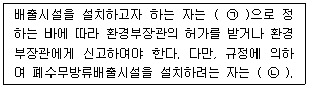
- ㉠ 환경부령, ㉡ 환경부장관의 허가를 받아야 한다.
- ㉠ 대통령령, ㉡ 환경부장관의 허가를 받아야 한다.
- ㉠ 환경부령, ㉡ 환경부장관에게 신고하여야 한다.
- ㉠ 대통령령, ㉡ 환경부장관에게 신고하여야 한다.
(정답률: 76%)
75. 시・도지사가 환경부장관이 지정・고시하는 호소외의 호소에 대하여 호소수의 수질 및 수생태계 등을 조사・측정하여야 하는 호소의 기준은?(오류 신고가 접수된 문제입니다. 반드시 정답과 해설을 확인하시기 바랍니다.)
- 평수위의 면적이 20만 m2 이상인 호소
- 갈수위의 면적이 30만 m2 이상인 호소
- 홍수위의 면적이 50만 m2 이상인 호소
- 만수위의 면적이 80만 m2 이상인 호소
(정답률: 45%)
76. 다음은 폐수처리업자의 준수사항에 관한 내용이다. ( )안에 알맞은 것은?
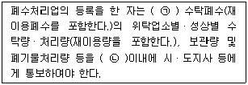
- ㉠ 월별로, ㉡ 다음 달 시작 후 10일
- ㉠ 분기별로, ㉡ 다음 분기의 시작 후 10일
- ㉠ 반기별로, ㉡ 다음 반기의 시작 후 10일
- ㉠ 년도별로, ㉡ 다음 해 시작 후 10일
(정답률: 53%)
77. 비점오염원 관리지역에 대한 설명 중 옳지 않은 것은?
- 환경부장관은 비점오염원에서 유출되는 강우 유출수로 인해 중대한 위해가 발생한 우려가 있는 지역에 대해 비점오염원관리지역을 지정할 수 있다.
- 시・도지사는 관할구역 중 비점오염원의 관리가 필요하다고 이전되는 지역에 대해 환경부장관에게 관리지역으로의 지정을 요청할 수 있다.
- 관리지역의 지정기준・지정절차・그 밖의 필요한 사항은 환경부령으로 정한다.
- 환경부장관은 관리지역의 지정사유가 없어졌다면 관리지역의 전부 또는 일부에 대하여 지정을 해제할 수 있다.
(정답률: 50%)
78. 다음의 위임업무 보고사항 중 보고 횟수 기준이 다른 것은?
- 과징금 부과 실적
- 폐수처리업에 대한 등록・지도단속 실적 및 처리 실적 현황
- 폐수위탁・사업장 내 처리현황 및 처리실적
- 골프장 맹・고독성 농약 사용 여부 확인결과
(정답률: 39%)
79. 환경기술인을 임명하지 아니하거나 임명(바꾸어 임면한 것을 포함한다.)에 대한 신고를 하지 아니한 자에 대한 과태료 처분 기준은?
- 1천만원 이하
- 300만원 이하
- 200만원 이하
- 100만원 이하
(정답률: 66%)
80. 배출시설 등의 가동개시 신고를 한 사업자가 환경부령이 정하는 기간 이내에 배출시설에서 배출되는 수질오염 물질이 배출허용기준 이하로 처리될 수 있도록 방지 시설을 운영하여야 하는데, 이 경우 환경부령이 정하는 기간으로 옳지 않은 것은?
- 폐수처리방법이 생물화학적인 처리방법인 경우 (가동개시일이 11월 1일부터 다음연도 1월 31일까지에 해당하지 않는 경우) : 가동개시일로부터 50일
- 폐수처리방법이 생물화학적인 처리방법인 경우 (가동개시일이 11월 1일부터 다음연도 1월 31일까지에 해당되는 경우) : 가동개시일로부터 70일
- 폐수처리방법이 물리적인 처리방법인 경우 : 가동개시일로부터 30일
- 폐수처리방법이 화학적인 처리방법인 경우 : 가동개시일로부터 40일
(정답률: 48%)